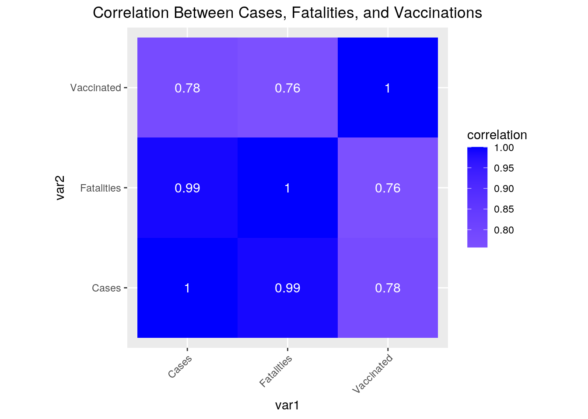
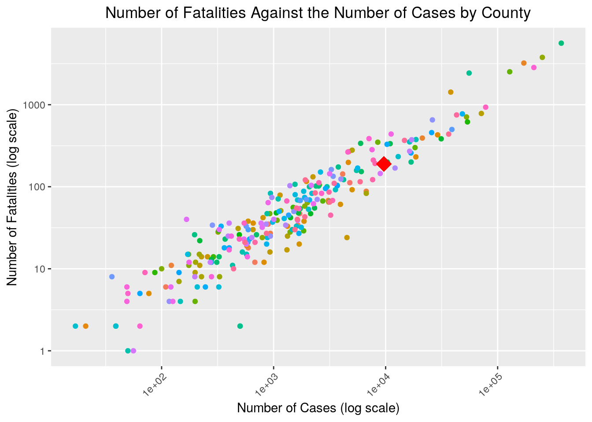
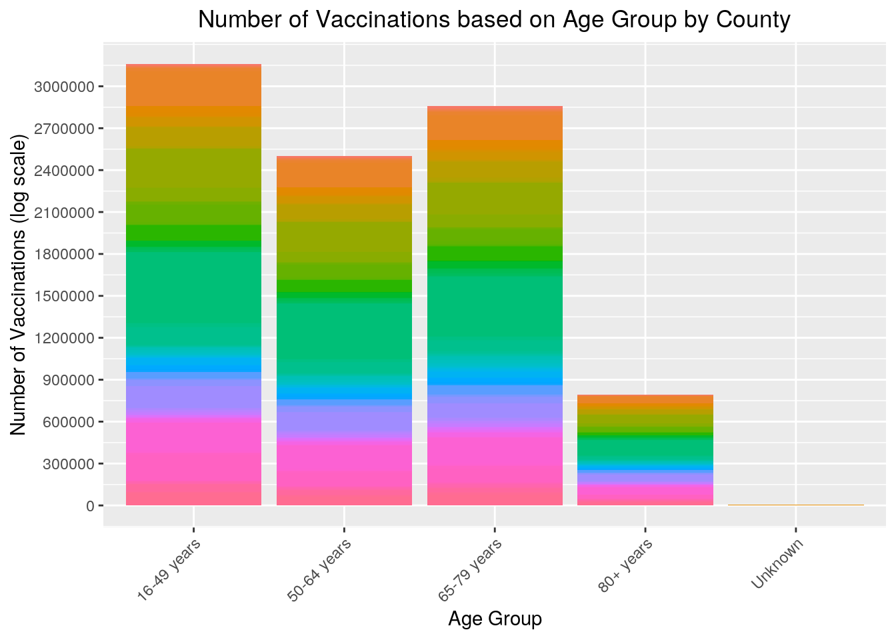
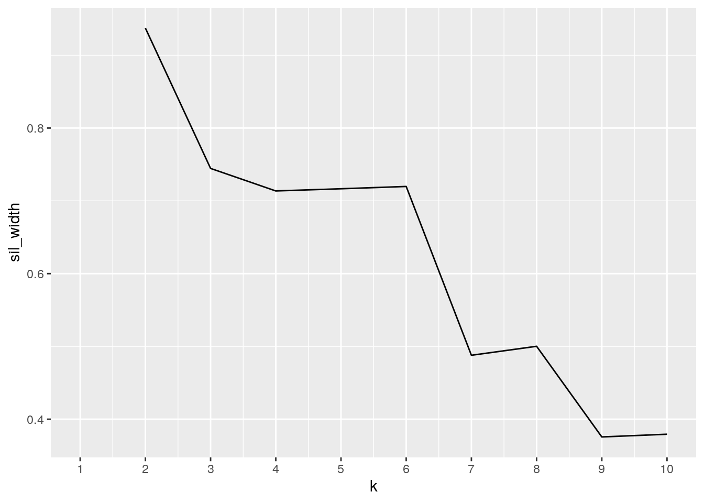
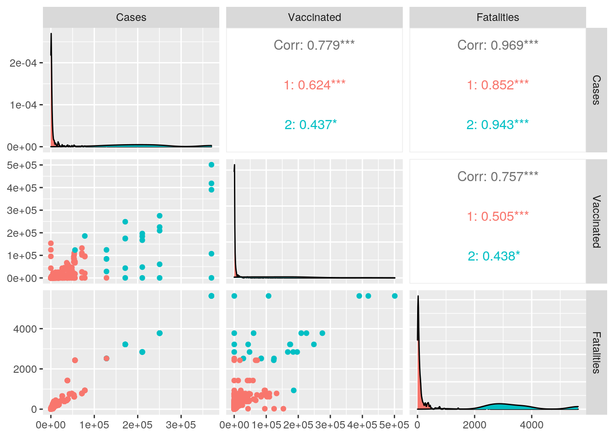
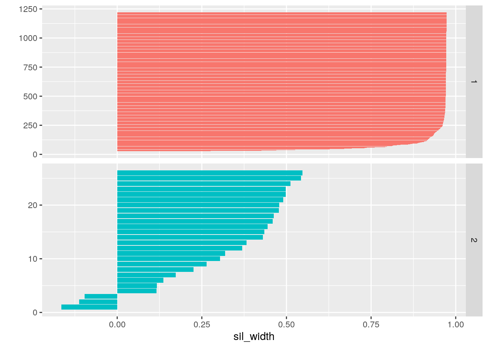

The following information illustrates data between two datasets. One dataset is based off of the number of COVID-19 cases and fatalities in Texas counties, and the other dataset contains information about the number of COVID vaccine doses administered in all of the counties in Texas based on different age groups. Both datasets were up-to-date for each county as of March 22, 2021. For the case count data, the variables include: County, Confirmed Cases, and Fatalities. The vaccine distribution data includes variables such as County Name, Age Group, and Doses Administered. Both datasets were individually acquired from the Texas Department of State Health Services.
The topic of COVID-19 cases and vaccine distribution is interesting to me because of the current relevance of the information. Because this month, March, marks a year since the SARS-CoV-2 virus reached Texas, I was compelled to see the current state of different counties in Texas. I hypothesize that counties that have vaccinated more people will have less COVID-19 cases and less fatalities. I expect this association based on the fact that some of the vaccines, such as Moderna and Pfizer, have an efficacy rate of approximately 95%, which leads me to believe that there will be less cases after more of the population has been vaccinated.
library(tidyverse)
covidcases <- read_csv("covidcases.csv")
covidvaccine <- read_csv("covidvaccine.csv")
# renaming to replace spaces in column title with an
# underscore
names(covidcases) <- gsub("\\s", "_", names(covidcases))
head(covidcases)## # A tibble: 6 x 3
## County Confirmed_Cases Fatalities
## <chr> <dbl> <dbl>
## 1 Anderson 4790 112
## 2 Andrews 1710 47
## 3 Angelina 4706 268
## 4 Aransas 893 35
## 5 Archer 680 12
## 6 Armstrong 109 6# Making `covidcases` wide then long
longcovidcases <- covidcases %>% rename(Cases = Confirmed_Cases) %>%
distinct() %>% pivot_wider(names_from = "County", values_from = "Cases") %>%
pivot_longer(cols = c(-Fatalities), names_to = "County",
values_to = "Cases", values_drop_na = TRUE) %>% mutate(County = str_replace(County,
"Unknown", "Other")) %>% select(County, Cases, Fatalities) %>%
arrange(-desc(County))
head(longcovidcases)## # A tibble: 6 x 3
## County Cases Fatalities
## <chr> <dbl> <dbl>
## 1 Anderson 4790 112
## 2 Andrews 1710 47
## 3 Angelina 4706 268
## 4 Aransas 893 35
## 5 Archer 680 12
## 6 Armstrong 109 6# renaming to replace '.' in column title with an underscore
names(covidvaccine) <- gsub("\\s", "_", names(covidvaccine))
head(covidvaccine)## # A tibble: 6 x 3
## County_Name Age_Group Doses_Administered
## <chr> <chr> <dbl>
## 1 Anderson 16-49 years 1413
## 2 Anderson 50-64 years 2042
## 3 Anderson 65-79 years 3472
## 4 Anderson 80+ years 1009
## 5 Anderson Unknown 2
## 6 Andrews 16-49 years 3288# Making `covidvaccine` wide then long
longcovidvaccine <- covidvaccine %>% rename(County = County_Name) %>%
distinct() %>% pivot_wider(names_from = "Age_Group", values_from = "Doses_Administered") %>%
pivot_longer(cols = c(-County), names_to = "Age_Group", values_to = "Vaccinated")
head(longcovidvaccine)## # A tibble: 6 x 3
## County Age_Group Vaccinated
## <chr> <chr> <dbl>
## 1 Anderson 16-49 years 1413
## 2 Anderson 50-64 years 2042
## 3 Anderson 65-79 years 3472
## 4 Anderson 80+ years 1009
## 5 Anderson Unknown 2
## 6 Anderson Total NAFirst, I replaced the space with an underscore in all of the column titles in both datasets to help run code throughout the rest of the project. Both datasets covidcases and covidvaccine were long to start with, so I used pivot_wider() to demonstrate the use of the function. I then returned the datasets to their long format using pivot_longer. I also made a new name for the long data, so I will be able to use it for the rest of the project. For covidcases I used mutate() and str_replace() to modify the “Unknown” counties to “Other” to match the covidvaccine dataset, which will help with joining in the next step.
longcovidcases %>% full_join(longcovidvaccine, by = "County") %>%
nrow()## [1] 1800# Left join
covidjoined <- longcovidcases %>% left_join(longcovidvaccine,
by = "County")
head(covidjoined)## # A tibble: 6 x 5
## County Cases Fatalities Age_Group Vaccinated
## <chr> <dbl> <dbl> <chr> <dbl>
## 1 Anderson 4790 112 16-49 years 1413
## 2 Anderson 4790 112 50-64 years 2042
## 3 Anderson 4790 112 65-79 years 3472
## 4 Anderson 4790 112 80+ years 1009
## 5 Anderson 4790 112 Unknown 2
## 6 Anderson 4790 112 Total NAnrow(covidjoined)## [1] 1786nrow(longcovidcases)## [1] 256nrow(longcovidvaccine)## [1] 17991800 - 1786## [1] 14(14/1800) * 100## [1] 0.7777778countNA <- function(z) sum(is.na(z))
covidjoined %>% summarize_all(countNA)## # A tibble: 1 x 5
## County Cases Fatalities Age_Group Vaccinated
## <int> <int> <int> <int> <int>
## 1 0 0 0 1 565nna_covidjoined <- covidjoined %>% na.omit()
nrow(covidjoined) - nrow(nna_covidjoined)## [1] 565The data for longcovidcases had 256 observations, and longcovidvaccine had 1799 observations. I decided on a left join because I felt that it would be most effective to find the relationship between cases and vaccinations between the counties (i.e., the ID variable). All counties have COVID cases, but not all counties have the same capacity to carry out vaccinations. A left join with longcovidcases as the first dataframe would ensure that all counties are accounted for and not dropped. When I compared the number of observations in a full join (1,800) to the number of observations in the left join (1,786), there were only 14 observations that were lost. Less than 1% of observations were lost in the join (0.78%), so completing a left join still allows me to see the association later on in the project. If problems with finding an association were to occur, they would be minor. After finding how many NAs were present, there were relatively consistent numbers of NAs (0) across most variables, except for the Vaccinated, which had 565 NAs, so I decided to drop those values. There ended up being 565 observations dropped because of the numerous NAs in the Vaccinated category. Because I omitted the NA values, more data was lost. However, there should still be enough data left to find a relationship.
dplyr Functions# What county has the highest cases (besides the total number
# of cases)? (Using `filter()` and `select()`)
nna_covidjoined %>% filter(Cases == max(Cases)) %>% select(County,
Cases) %>% distinct()## # A tibble: 1 x 2
## County Cases
## <chr> <dbl>
## 1 Harris 369892# What county and age group has the most vaccinations? (Using
# `select()` and `arrange()`)
nna_covidjoined %>% select(County, Age_Group, Vaccinated) %>%
arrange(desc(Vaccinated)) %>% distinct() %>% head()## # A tibble: 6 x 3
## County Age_Group Vaccinated
## <chr> <chr> <dbl>
## 1 Harris 16-49 years 501123
## 2 Harris 65-79 years 418530
## 3 Harris 50-64 years 390344
## 4 Dallas 16-49 years 275185
## 5 Bexar 16-49 years 248774
## 6 Dallas 65-79 years 225423# What is the absolute difference between the number of
# `Cases` and number of `Fatalities`? (Using `mutate()`)
nna_covidjoined %>% mutate(difference = abs(Cases - Fatalities)) %>%
arrange(desc(difference))## # A tibble: 1,221 x 6
## County Cases Fatalities Age_Group Vaccinated difference
## <chr> <dbl> <dbl> <chr> <dbl> <dbl>
## 1 Harris 369892 5625 16-49 years 501123 364267
## 2 Harris 369892 5625 50-64 years 390344 364267
## 3 Harris 369892 5625 65-79 years 418530 364267
## 4 Harris 369892 5625 80+ years 107285 364267
## 5 Harris 369892 5625 Unknown 347 364267
## 6 Dallas 250531 3776 16-49 years 275185 246755
## 7 Dallas 250531 3776 50-64 years 209198 246755
## 8 Dallas 250531 3776 65-79 years 225423 246755
## 9 Dallas 250531 3776 80+ years 60547 246755
## 10 Dallas 250531 3776 Unknown 198 246755
## # … with 1,211 more rows# using `group_by()`, `summarize()`, and `select()`
nna_covidjoined %>% group_by(County) %>% summarize_all(n_distinct) %>%
select(County, Age_Group)## # A tibble: 255 x 2
## County Age_Group
## <chr> <int>
## 1 Anderson 5
## 2 Andrews 4
## 3 Angelina 5
## 4 Aransas 5
## 5 Archer 4
## 6 Armstrong 5
## 7 Atascosa 5
## 8 Austin 5
## 9 Bailey 5
## 10 Bandera 5
## # … with 245 more rowssummarize() and group_by()library(kableExtra)
# Numeric Variable: Summary of `Cases`
kable(nna_covidjoined %>% summarize(mean_Cases = mean(Cases,
na.rm = T), cor_Cases_Vaccinations = cor(Cases, Vaccinated,
use = "pair"), sd_Cases = sd(Cases, na.rm = T), n = n(),
max_Cases = max(Cases, na.rm = T), min_Cases = min(Cases,
na.rm = T)) %>% head()) %>% kable_styling(bootstrap_options = c("striped",
"hover", "condensed"))| mean_Cases | cor_Cases_Vaccinations | sd_Cases | n | max_Cases | min_Cases |
|---|---|---|---|---|---|
| 9677.249 | 0.7785923 | 35281.97 | 1221 | 369892 | 0 |
# Summary of `Cases` grouped by `Age_Group`
kable(nna_covidjoined %>% group_by(Age_Group) %>% summarize(mean_Cases = mean(Cases,
na.rm = T), sd_Cases = sd(Cases, na.rm = T), n = n(), max_Cases = max(Cases,
na.rm = T), min_Cases = min(Cases, na.rm = T)) %>% head()) %>%
kable_styling(bootstrap_options = c("striped", "hover", "condensed"))| Age_Group | mean_Cases | sd_Cases | n | max_Cases | min_Cases |
|---|---|---|---|---|---|
| 16-49 years | 9287.145 | 34630.88 | 255 | 369892 | 0 |
| 50-64 years | 9287.145 | 34630.88 | 255 | 369892 | 0 |
| 65-79 years | 9287.145 | 34630.88 | 255 | 369892 | 0 |
| 80+ years | 9323.689 | 34694.33 | 254 | 369892 | 0 |
| Unknown | 11599.198 | 38593.61 | 202 | 369892 | 0 |
# Numeric Variable: Summary of `Vaccinated`
kable(nna_covidjoined %>% summarize(mean_Vaccinated = mean(Vaccinated,
na.rm = T), sd_Vaccinated = sd(Vaccinated, na.rm = T), n = n(),
max_Vaccinated = max(Vaccinated, na.rm = T), min_Vaccinated = min(Vaccinated,
na.rm = T)) %>% head()) %>% kable_styling(bootstrap_options = c("striped",
"hover", "condensed"))| mean_Vaccinated | sd_Vaccinated | n | max_Vaccinated | min_Vaccinated |
|---|---|---|---|---|
| 7632.814 | 31875.09 | 1221 | 501123 | 1 |
# Summary of `Vaccinated` grouped by `County`
kable(nna_covidjoined %>% group_by(County) %>% summarize(mean_Vaccinated = mean(Vaccinated,
na.rm = T), sd_Vaccinated = sd(Vaccinated, na.rm = T), n = n(),
max_Vaccinated = max(Vaccinated, na.rm = T), min_Vaccinated = min(Vaccinated,
na.rm = T)) %>% head()) %>% kable_styling(bootstrap_options = c("striped",
"hover", "condensed"))| County | mean_Vaccinated | sd_Vaccinated | n | max_Vaccinated | min_Vaccinated |
|---|---|---|---|---|---|
| Anderson | 1587.60 | 1288.1026 | 5 | 3472 | 2 |
| Andrews | 2001.00 | 1154.1121 | 4 | 3288 | 566 |
| Angelina | 4938.80 | 3540.8735 | 5 | 9186 | 14 |
| Aransas | 1856.20 | 1702.2076 | 5 | 4547 | 2 |
| Archer | 864.75 | 377.1484 | 4 | 1302 | 396 |
| Armstrong | 155.40 | 125.1891 | 5 | 343 | 1 |
# Numeric Variable: Summary of `Fatalities`
kable(nna_covidjoined %>% summarize(mean_Fatalities = mean(Fatalities,
na.rm = T), sd_Fatalities = sd(Fatalities, na.rm = T), n = n(),
max_Fatalities = max(Fatalities, na.rm = T), min_Fatalities = min(Fatalities,
na.rm = T)) %>% head()) %>% kable_styling(bootstrap_options = c("striped",
"hover", "condensed"))| mean_Fatalities | sd_Fatalities | n | max_Fatalities | min_Fatalities |
|---|---|---|---|---|
| 189.4693 | 565.0604 | 1221 | 5625 | 0 |
# Summary of `Fatalities` grouped by `Age_Group`
kable(nna_covidjoined %>% group_by(Age_Group) %>% summarize(mean_Fatalities = mean(Fatalities,
na.rm = T), sd_Fatalities = sd(Fatalities, na.rm = T), n = n(),
max_Fatalities = max(Fatalities, na.rm = T), min_Fatalities = min(Fatalities,
na.rm = T)) %>% head()) %>% kable_styling(bootstrap_options = c("striped",
"hover", "condensed"))| Age_Group | mean_Fatalities | sd_Fatalities | n | max_Fatalities | min_Fatalities |
|---|---|---|---|---|---|
| 16-49 years | 182.2667 | 554.9116 | 255 | 5625 | 0 |
| 50-64 years | 182.2667 | 554.9116 | 255 | 5625 | 0 |
| 65-79 years | 182.2667 | 554.9116 | 255 | 5625 | 0 |
| 80+ years | 182.9843 | 555.8887 | 254 | 5625 | 0 |
| Unknown | 224.9010 | 616.5764 | 202 | 5625 | 1 |
# Categorical Variables
kable(nna_covidjoined %>% group_by(County, Age_Group) %>% summarize(mean_Vaccinated = mean(Vaccinated,
na.rm = T), n_distinct_Vaccinated = n_distinct(Vaccinated,
na.rm = T), n = n(), max_Vaccinated = max(Vaccinated, na.rm = T),
min_Vaccinated = min(Vaccinated, na.rm = T)) %>% head()) %>%
kable_styling(bootstrap_options = c("striped", "hover", "condensed"))| County | Age_Group | mean_Vaccinated | n_distinct_Vaccinated | n | max_Vaccinated | min_Vaccinated |
|---|---|---|---|---|---|---|
| Anderson | 16-49 years | 1413 | 1 | 1 | 1413 | 1413 |
| Anderson | 50-64 years | 2042 | 1 | 1 | 2042 | 2042 |
| Anderson | 65-79 years | 3472 | 1 | 1 | 3472 | 3472 |
| Anderson | 80+ years | 1009 | 1 | 1 | 1009 | 1009 |
| Anderson | Unknown | 2 | 1 | 1 | 2 | 2 |
| Andrews | 16-49 years | 3288 | 1 | 1 | 3288 | 3288 |
# Correlation between `Cases` and `People`
covidjoined %>% summarize(cor(Cases, Vaccinated, use = "pair"))## # A tibble: 1 x 1
## `cor(Cases, Vaccinated, use = "pair")`
## <dbl>
## 1 0.779Harris county had the most cases out of all of the counties with 369,892 COVID-19 cases and the most vaccinations with 501,123 vaccines distributed to the 16–49-year-old group. These statistics were generated using the filter() and select() functions. By utilizing the mutate() function, I was able to create another column based on the absolute differences between the number of Cases and Fatalities. Lastly, I used group_by(), summarize_all(), and select() to find the number of different ages groups per county.
For each of the numerical variables (Cases, Vaccinations, and Fatalities), I performed two summaries. First, I would summarize by the mean, standard deviation, count, max, and min. Then, I did the same statistics again after I grouped by either categorical variable Age_Group or County. To give the tables a better aesthetic, I used the kable package. Lastly, after grouping by the two categorical variables (County and Age_Group), I ran the same summary statistics for the Vaccinated variable. It was interesting to find out that the average number of people vaccinated was around 7,632, which was greater than the average number of fatalities (189).
cor_cv <- covidjoined %>% select_if(is.numeric) %>% cor(use = "pair")
head(cor_cv)## Cases Fatalities Vaccinated
## Cases 1.0000000 0.9889732 0.7785923
## Fatalities 0.9889732 1.0000000 0.7572566
## Vaccinated 0.7785923 0.7572566 1.0000000tidycor_cv <- cor_cv %>% as.data.frame %>% rownames_to_column("var1") %>%
pivot_longer(-1, names_to = "var2", values_to = "correlation")
tidycor_cv## # A tibble: 9 x 3
## var1 var2 correlation
## <chr> <chr> <dbl>
## 1 Cases Cases 1
## 2 Cases Fatalities 0.989
## 3 Cases Vaccinated 0.779
## 4 Fatalities Cases 0.989
## 5 Fatalities Fatalities 1
## 6 Fatalities Vaccinated 0.757
## 7 Vaccinated Cases 0.779
## 8 Vaccinated Fatalities 0.757
## 9 Vaccinated Vaccinated 1tidycor_cv %>% ggplot(aes(var1, var2, fill = correlation)) +
geom_tile() + scale_fill_gradient2(low = "red", mid = "white",
high = "blue") + geom_text(aes(label = round(correlation,
2)), color = "white", size = 4) + theme(axis.text.x = element_text(angle = 45,
hjust = 1)) + coord_fixed() + ggtitle("Correlation Between Cases, Fatalities, and Vaccinations") +
theme(plot.title = element_text(hjust = 0.5))
Figure 1: This is a correlation heat map between all of the numeric variables (Cases, Fatalities, and Vaccinated). It appears that there is a high correlation between all of the variables. The highest correlation, besides the 1.00 correlation with itself, is between Fatalities and Cases, with a correlation of 0.99. The lowest correlation is between Vaccinated and Fatalities, with a correlation of 0.76.
# Number of Counties
nna_covidjoined %>% summarize(n_distinct(County))## # A tibble: 1 x 1
## `n_distinct(County)`
## <int>
## 1 255# Average Number of Cases & Fatalities
nna_covidjoined %>% summarize(mean(Cases), mean(Fatalities))## # A tibble: 1 x 2
## `mean(Cases)` `mean(Fatalities)`
## <dbl> <dbl>
## 1 9677. 189.# Relationship between `Cases` and `Fatalities` based on
# `County`
ggplot(nna_covidjoined, aes(Cases, Fatalities, color = County)) +
geom_point(stat = "summary", fun = mean, shape = "circle",
size = 1.5) + geom_point(aes(x = (mean(Cases)), y = (mean(Fatalities))),
color = "red", shape = "diamond", size = 6) + ggtitle("Number of Fatalities Against the Number of Cases by County") +
theme(plot.title = element_text(hjust = 0.5)) + xlab("Number of Cases (log scale)") +
ylab("Number of Fatalities (log scale)") + scale_x_log10() +
scale_y_log10() + theme(axis.text.x = element_text(angle = 45,
hjust = 1), legend.position = "none")
Figure 2: There is a positive correlation between the number of COVID-19 cases and the number of fatalities caused by the virus based on the county. This makes sense, as we would expect that some of the more populated counties would have more people. Therefore, there is more opportunity for the virus to spread and cause death. The legend for County coloration was removed because there are a total of 255 counties. Lastly, the red diamond plotted on top of the scatterplot represents the average number of cases (189) and fatalties (9,677) of all the counties.
# Relationship between Number of `Vaccinations` and
# `Age_Group` between `County`
ggplot(nna_covidjoined, aes(x = Age_Group, y = Vaccinated, fill = County)) +
geom_bar(stat = "summary", fun = mean) + ggtitle("Number of Vaccinations based on Age Group by County") +
theme(plot.title = element_text(hjust = 0.5)) + xlab("Age Group") +
scale_y_log10() + scale_y_continuous(name = "Number of Vaccinations (log scale)",
breaks = seq(0, 3e+06, 3e+05)) + theme(axis.text.x = element_text(angle = 45,
hjust = 1), legend.position = "none")
Figure 3: As illustrated above, there is an apparent trend that the 16-49 year-old age group results in the greatest number of COVD-19 vaccinations. The next age group that had the highest number of vaccinations was the 65-79 year-old age group, then 50-64, and lastly the 80+ years. The legend for the County coloration was too large, so it needed to be removed. However, the counties in the pink region had the least number of vaccinations, and the red/orange region had the most.
library(cluster)
# scaling data
pam_dat <- nna_covidjoined %>% select(-Age_Group, -County) %>%
scale
# finding number of clusters
sil_width <- vector()
for (i in 2:10) {
pam_fit <- pam(pam_dat, k = i)
sil_width[i] <- pam_fit$silinfo$avg.width
}
ggplot() + geom_line(aes(x = 1:10, y = sil_width)) + scale_x_continuous(name = "k",
breaks = 1:10) #2 clusters is best
# running PAM using numeric variables
pam2 <- nna_covidjoined %>% select(-Age_Group, -County) %>% scale %>%
pam(2)
pam2## Medoids:
## ID Cases Fatalities Vaccinated
## [1,] 792 -0.2357365 -0.2556705 -0.2032877
## [2,] 1052 5.6946576 4.6924727 5.0076145
## Clustering vector:
## [1] 1 1 1 1 1 1 1 1 1 1 1 1 1 1 1 1 1 1 1 1 1 1 1 1 1 1 1 1 1 1 1 1 1 1 1 1 1
## [38] 1 1 1 1 1 1 1 1 1 1 1 1 1 1 1 1 1 1 1 1 1 1 1 1 1 1 1 1 1 1 1 2 2 2 2 2 1
## [75] 1 1 1 1 1 1 1 1 1 1 1 1 1 1 1 1 1 1 1 1 1 1 1 1 1 1
## [ reached getOption("max.print") -- omitted 1121 entries ]
## Objective function:
## build swap
## 0.3695177 0.3695177
##
## Available components:
## [1] "medoids" "id.med" "clustering" "objective" "isolation"
## [6] "clusinfo" "silinfo" "diss" "call" "data"# visualize
final <- nna_covidjoined %>% mutate(cluster = pam2$clustering)
library(plotly)
final %>% plot_ly(x = ~Cases, y = ~Fatalities, z = ~Vaccinated,
color = ~cluster, type = "scatter3d", mode = "markers") %>%
layout(autosize = F, width = 900, height = 400)# visualize
library(GGally)
nna_covidjoined %>% mutate(cluster = as.factor(pam2$clustering)) %>%
ggpairs(columns = c("Cases", "Vaccinated", "Fatalities"),
aes(color = cluster))
# interpretation of clusters
pam2$silinfo$widths %>% as.data.frame %>% mutate(x = 1221:1) %>%
ggplot(aes(x, y = sil_width, fill = as.factor(cluster))) +
geom_bar(stat = "identity") + xlab("") + facet_grid(cluster ~
., scales = "free_y") + coord_flip() + theme(legend.position = "none")
# goodness-of-fit: 0.94=strong structure found
pam2$silinfo$avg.width## [1] 0.9373313The numeric variables Cases, Fatalities, and Vaccinated were all scaled and then used to find the optimal number of clusters, which was determined to be 2 clusters. Using ggplot, the peak sil_width was reached when k=2. After finding the number of clusters to use with PAM, I was able to run PAM and then visualize the three variables in three-dimensional space with plotly. Then, I was able to visualize all of the pairwise combinations of the three variables with GGally. The highest correlation was between Fatalities and Cases with a correlation value of 0.969. Specifically, cluster 2 has a higher correlation (0.943) than cluster 1 (0.852). This high correlation was also similarly illustrated in the correlation heat map, previously shown. Lastly, I was able to interpret the clusters using silinfo$avg.width. The goodness-of-fit was determined to have an average silhouette width of 0.94, which is indicative of a strong structure.